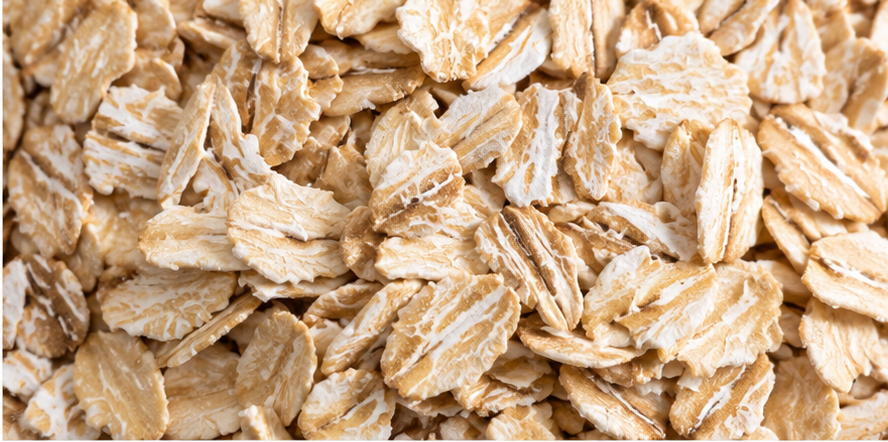
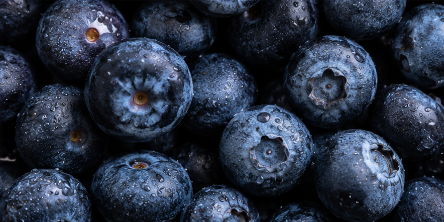
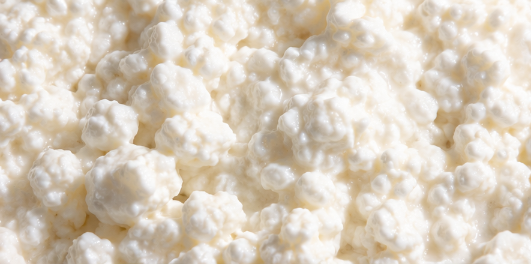
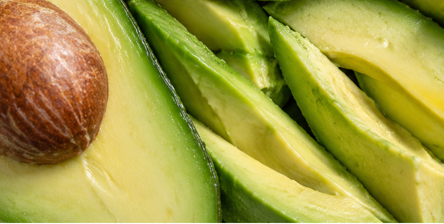
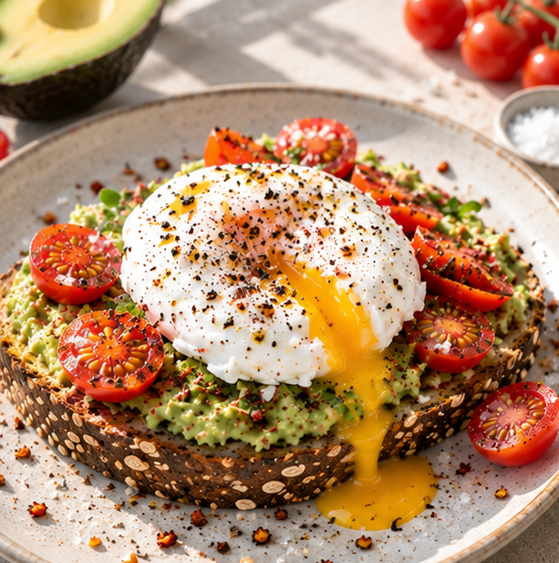
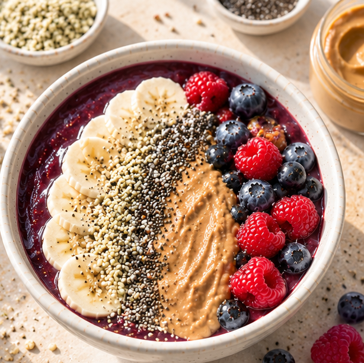
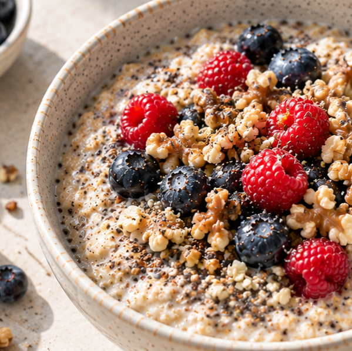

näringsrik frukost
-Ge kroppen och hjärnan maximal näring.
Lär dig kombinera rätt näringsämnen för långvarig energi, koncentration och välmående.
En näringsrik frukost handlar mer än att bara bli mätt. Det handlar om vad du ger kroppen att arbeta med. Genom att bryta nattfastan med rätt balans av protein, långsamma kolhydrater, hälsosamma fetter och vitaminer, hålls blodsockret jämt. Det ger dig en stabil energikurva, bättre koncentrationsförmåga och minskar risken för ötsug och småätande under dagen.
Glöm inte att en näringsrik och hälsosam frukost ser olika ut för alla - och så ska det vara. Att äta hälsosamt innebär inte enbart att man äter sådant som listas som nyttigt. En hälsosam kost bestär av sånt som både kroppen och du mår bra av. Med andra ord: sötsaker ingår i en hälsosam kost också. Så ät den där chokladen med!
Vad, varför och hur mycket?

Kolhydrater & fullkorn
Ca 50% av frukosten
- Varför? Kroppens och hjärnans viktigaste bränsle. Långsamma kolhydrater och fiberrikt fullkorn bryts ner långsamt, vilket ger en jämn energitillförsel.
- Var det finns:Havregryn, rågflingor, grovt bröd, osötad granola.

Vitaminer & antioxidanter
Ca en näve
- Varför? Stärker immunförsvaret och skyddar cellerna.
- Var det finns: Färska eller frysta bär (t.ex. acai, blåbär, hallon), frukt, spenat, tomat och paprika.

Protein
Ca 20% av frukosten
- Varför? Bygger upp celler och muskler samt ger en stark och långvarig mättnadskänsla.
- Var det finns: Ägg, kvarg, keso, fil/yoghurt, baljväxter, nötter och frön.

Hälsosamma fetter
Ca 15% av frukosten
- Varför? Nödvändigt för hjärnans funktion, upptaget av fettlösliga vitaminer samt cellernas uppbyggnad.
- Var det finns: Avokado, nötter, nötsmör, chiafrön, linfrön och andra frön.
3 favoritfrukostar proppade med näring

Avokadotoast med poscherat/kokt ägg:
Fiberrikt bröd toppat med avokado, ägg, flingsalt och skivade körsbärstomater.

Acai & berry bowl:
Fyllig bärskål toppad med hampafrön, chiafrön, jordnötssmör och skivad banan.

Preoteinfylld havregrynsgröt:
Gröt kokt på havregryn och frön, serverad med mjölk/växtdryck, färska bär och ett par valnötter.